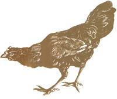
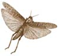
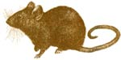
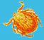

Chickens For Pest Control
February/March 2003
There are lots of grasshoppers around here, but my hens patrol the garden perimeter fence and really reduce the numbers of insects in the garden. Before I got the hens, some crops were totally destroyed by the 'hoppers. The hens also have helped control scorpions - they peck off the stinger and then work on the rest.
The chickens also have reduced the fire ant population by eating the bugs and seeds the ants would have sustained themselves on. I have no ticks here, but the chickens have reduced one nasty pest that had been around everywhere - termites.
M. WADE
New Braunfels, Texas
We have a 40-acre horse farm. Unfortunately, where there are horse barns there also are rats and mice. The horses leave bits of grain on the ground after they eat, and some undigested grain shows up in their manure. With all of this food, we had a serious rat and mouse problem.
My grandfather set out rat poison, and a trip to the veterinarian and $500 later, I found out that my Jack Russell terrier really likes the taste of it. She is fine, but I refuse to allow any more poison on our farm.
Instead, we got chickens. The birds accompany the horses and clean up all the grains on the ground and in the horses' manure. Their careful gleaning eliminates the source of food for the mice and rats, and now the pests have all but disappeared.
The benefit I had not counted on when I added chickens to our farm is that now we no longer have a flea problem. The chickens also help control files and lawn grubs. I love having the chickens. Not only do they control unwanted pests, but they are fun to watch, too. We have experimented with several different breeds, but our favorites are Silkies and Barred Rocks.
TINA DURBOROW
Lewisville, Pennsylvania
When we came to Cross Plains during a long drought, we found that our windmill supplied plenty of water for a garden, so we planted one. Next we knew, thousands of grasshoppers came from every direction and left us with bare stalks.
To beat the 'hoppers, we built a chicken and turkey run that surrounds our garden. The fencing is 5 feet high and has occasional cross fencing to keep hawks from swooping in and snatching up one of the chickens. Any grasshoppers that approach the garden have to move into this "moat," where the chickens and turkeys quickly gobble them up.
We also let guineas loose in the garden (they don't tend to scratch as much or peck the vegetables the way chickens and turkeys do). So far, this one-two punch is working well.
CURT AND GINNY HOSKINS
Cross Plains, Texas
An outbreak of pillbugs (rolypoly bugs) was eating us alive! Eating up all our tender little lettuce plants, that is. The big greenhouse was filthy with them. So was the hoophouse. Even the new midsized greenhouse was infested with these little wriggling crustaceans.
They were everywhere. Big ones. Little ones. And lots of in-between ones. We had to do something before they ate us out of greenhouse and home. But what? We searched all our books and files for nontoxic controls, to no avail. Old boo ks said to use DDT, lindane or chlordane, all toxic pesticides now banned in the United States. New books said pillbugs usually feed mostly on dead organic matter, but that wasn't true in our greenhouses.
Finally I remembered a book about using portable coops to let chickens feast in garden beds. Before we replanted the lettuce beds, we penned a half-dozen hens in a bed. The minute they spotted the first pillbug, garden soil flew, hens' feet became yellow blurs, and the chickens' heads bobbed up and down like runaway sewing machines.
After about an hour, things calmed down and the chickens were napping on the freshly fluffed soil. There wasn't a pillbug to be found.
GEORGE DEVAULT
Emmaus, Pennsylvania
 |
 |
 |
|
 |
 |
|